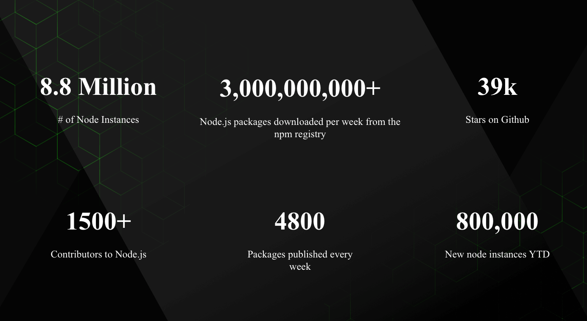

A Little Bit of History
Believe it or not, Node.js is just 9 years old. In comparison, JavaScript is 23 years old and the web as we know it (after the introduction of Mosaic) is 25 years old.
JavaScript is a programming language that was created at Netscape as a scripting tool to manipulate web pages inside their browser, Netscape Navigator.
Part of the business model of Netscape was to sell Web Servers, which included an environment called Netscape LiveWire, which could create dynamic pages using server-side JavaScript. So the idea of server-side JavaScript was not introduced by Node.js, but it’s old just like JavaScript - but at the time it was not successful.
One key factor that led to the rise of Node.js was timing. JavaScript since a few years was starting being considered a serious language, thanks for the “Web 2.0” applications that showed the world what a modern experience on the web could be like (think Google Maps or GMail).
The JavaScript engines performance bar raised considerably thanks to the browser competition battle, which is still going strong. Development teams behind each major browser work hard every day to give us better performance, which is a huge win for JavaScript as a platform. V8, the engine that Node.js uses under the hood, is one of those and in particular it’s the Chrome JS engine.
But of course, Node.js is not popular just because of pure luck or timing. It introduced much innovative thinking on how to program in JavaScript on the server.
2009
- Node.js is born
- The first form of npm is created
- Ryan Dahl's (Creator of Node.js) Original Node.js Talk
- The first presentation on Node.js from Ryan Dahl at JSConf
2010
- Express is born
- Socket.io is born
- Experimental Node.js Support on Heroku
- Ryan Dahl's Google Tech Talk on Node.js
- Node.js 0.2.0 released
2011
- npm hits 1.0
- Big companies start adopting Node: LinkedIn, Uber Hapi is born
- Node.js Guide
- Ryan Dahl's AMA on Reddit
- The Node Beginner Book, an introduction to Node.js, is now complete
- A comprehensive Node.js tutorial for beginners
- Ryan Dahl talks about the history of Node.js and why he created it
2012
- Adoption continues very rapidly
- Node.js creator Ryan Dahl steps away from Node’s day-to-day
- Node.js v0.8.0 [stable] is out
- Hapi, a Node.js framework
2013
- First big blogging platform using Node: Ghost
- Koa is born
- The MEAN Stack: MongoDB, ExpressJS, AngularJS and Node.js
- How We Built eBay’s First Node.js Application
- Node.js Memory Leak at Walmart
- PayPal releases Kraken, a Node.js framework
2014
- The Big Fork: io.js is a major fork of Node.js, with the goal of introducing ES6 support and moving faster
- TJ Fontaine takes over Node project
- Node.js Advisory Board
- Joyent and several members of the Node.js community announced a proposal for a Node.js Advisory Board as a next step towards a fully open governance model for the Node.js open source project
- Node.js in Flame Graphs - Netflix
- IO.js – Evented I/O for V8 Javascript
2015
1st Quarter
- IO.js 1.0.0
- Joyent Moves to Establish Node.js Foundation
- Joyent, IBM, Microsoft, PayPal, Fidelity, SAP and The Linux Foundation Join Forces to Support Node.js Community With Neutral and Open Governance
- IO.js and Node.js reconciliation proposal
2nd Quarter
- npm Private Modules
- Node lead TJ Fontaine is stepping down and leaving Joyent
- A changing of the guard in Nodeland.
- Node.js and io.js are merging under the Node Foundation
3rd Quarter
4th Quarter
- Node v4.2.0, first Long Term Support release
- Apigee, RisingStack and Yahoo join the Node.js Foundation
- Node Interactive
- The first annual Node.js conference by the Node.js Foundation
2016
1st Quarter
- Express becomes an incubated project
- The leftpad incident
- Google Cloud Platform joins the Node.js Foundation
2nd Quarter
3rd Quarter
4th Quarter
- The yarn package manager got released
- Node Interactive North America in Austin, Texas
- Node.js 6 becomes the LTS version
- IBM, Intel, Microsoft, Mozilla and NodeSource Join Forces on Node.js API; Node.js Build System will Start Producing Nightly node-chakracore Builds
2017 - The Year of Mainstream Adoption
1st Quarter
- Node.js Certification Program to be launched by the Node Foundation
- NASA’s Node.js Case Study Released
2nd Quarter
- What’s new in Node 8
- N-API: Next generation Node.js APIs for native modules
- Mark Hinkle becomes the new executive director of the Node Foundation
3rd Quarter
- HTTP2 Arrives into the Node.js Core
- The Node.js Survey of 2017 Released
- A new V8 is coming, Node.js Performance is Changing
- Node.js 8.3.0 is now available shipping with the Ignition + TurboFan execution pipeline
- Node.js Forked Again Over Complaints of Unresponsive Leadership
4th Quarter
- Node.js State of the Union 2017
- Node.js 8 Moves into Long-Term Support and Node.js 9 Becomes the New Current Release Line
- Node.js Interactive 2017 Vancouver
- Two-factor authentication and read-only tokens arrive to npm